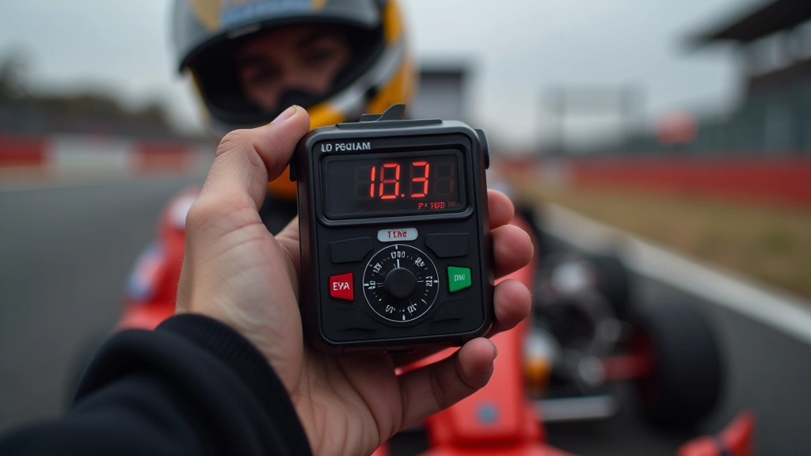
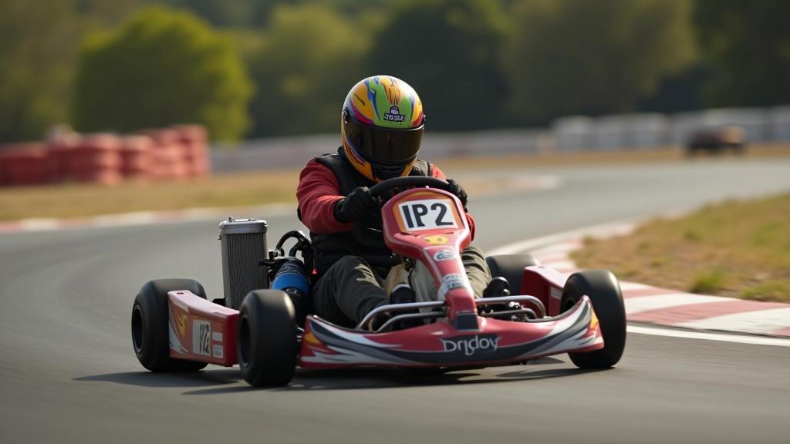

أساسيات التسريع من المنحنيات
تعرف على المبادئ الأساسية لكيفية الخروج السليم من المنحنيات وتطبيق الدواسة بشكل صحيح.
اقرأ المقالاستخدم البيانات والتحليلات لقياس تقدمك وتحديد نقاط الضعف في تقنيتك عند الخروج من المنحنيات بسرعة أعلى.


فريق التحرير والمراجعة
كتبه فريق تحرير ألفا درايفر، متخصص في تقديم إرشادات عملية وسهلة الفهم حول تقنيات الكارتينج.
الكثير من السائقين يعتمدون على الشعور والحدس وحسب. لكن هذا ليس كافياً إذا كنت تريد حقاً أن تتقدم. البيانات توضح لك بالضبط أين تفقد الثواني، وأي أجزاء من المسار تحتاج إلى تحسين. عندما تقيس أدائك، يصبح لديك خطة واضحة للتطور.
نحن نتحدث هنا عن أشياء بسيطة جداً — أوقات اللفات، سرعات الخروج من المنحنيات، نقاط الفرملة. هذه المعلومات موجودة أمامك، لكن غالباً لا نلاحظها. عندما تبدأ بتسجيل هذه الأرقام والمقارنة بينها، ستفاجأ بكمية المعلومات القيمة التي كانت مفقودة.

لا تحتاج إلى معدات باهظة الثمن لتبدأ. جهاز قياس اللفات البسيط يكفي تماماً. هذا الجهاز يسجل وقت كل لفة تقطعها، ويخزنها حتى تتمكن من المقارنة بين لفة وأخرى. بعض المسارات توفر هذه الأجهزة مباشرة، وإذا لم توفرها، فيمكنك شراء واحد بسعر معقول جداً.
بجانب أجهزة القياس، يمكنك أيضاً استخدام فيديو بسيط من الهاتف. صور لفة أو لفتين من الأمام أو الخلف، ثم شاهدها لاحقاً وركز على نقاط محددة — مثل الفرملة أو دخول المنحنى. البيانات البصرية مهمة جداً مثل الأرقام.
أسهل طريقة للبدء؟ احفظ أوقات ثلاث لفات تقريباً كل مرة تذهب للتدريب. ليس كل لفة. فقط ثلاث لفات جيدة. ستلاحظ الفرق خلال أسبوعين فقط.
هذا هو الجزء الذي يفرق حقاً بين السائق الجيد والسائق المتميز. عندما تخرج من منحنى بسرعة أعلى، تكتسب ثواني كاملة على المنحنيات التالية. لذا، يجب أن تركز على قياس سرعة الخروج بدقة.
الطريقة البسيطة: احفظ أقصى سرعة تصل إليها بعد كل منحنى رئيسي. اجعل دفتراً صغيراً وسجل الأرقام. لفة رقم 1: المنحنى الأول 45 كم/س، المنحنى الثاني 38 كم/س. لفة رقم 2: المنحنى الأول 47 كم/س، المنحنى الثاني 40 كم/س. شاهد الفرق؟ أنت تتحسن. المرة القادمة، حاول الوصول إلى 48 و 42.

بعد كل جلسة تدريب، احفظ أفضل ثلاث لفات. لا تقلق بشأن التفاصيل الدقيقة في البداية.
اختر أصعب منحنى في المسار. قس سرعة الخروج منه لمدة أسبوعين. هذا يعطيك صورة واضحة جداً للتطور.
مقارنة بسيطة: الأسبوع الأول متوسط سرعة 44 كم/س، الأسبوع الثاني 46 كم/س. تحسن واضح وملموس.
إذا لم تتحسن السرعة، فالمشكلة إما في الفرملة قبل المنحنى أو في التسارع بعده. ركز على كل جزء على حدة.
الفيديو يوضح الكثير من الأشياء التي الأرقام وحدها لا توضحها. عندما تشاهد لفة فيديو، تستطيع أن ترى بالضبط متى تفقد السيطرة على الكارت، أو متى تبدأ الفرملة متأخرة جداً. ركز على ثلاث أشياء: نقطة الفرملة، خط السباق، نقطة التسارع.
لا تحتاج إلى كاميرا احترافية. هاتفك يكفي تماماً. صور من ثلاث زوايا مختلفة إن أمكن — من الأمام، من الخلف، من الجانب. بعد التدريب، شاهد الفيديوهات مع مدرب أو مع صديق. ستسمع ملاحظات قيمة جداً.
الحقيقة؟ معظم السائقين لا يستخدمون البيانات على الإطلاق. هم فقط يقودون. لذا، إذا بدأت أنت بقياس أدائك، ستكون بالفعل خطوة واحدة على الأقل أمام المنافسين.
هذا المقال يقدم معلومات عملية حول كيفية قياس وتحليل الأداء في الكارتينج. النتائج تختلف من شخص لآخر حسب الخبرة والمسار والمعدات. استشر مدربك المحلي للحصول على تعليقات شخصية محددة لحالتك. هذه الإرشادات مقدمة لأغراض تعليمية فقط.
البيانات والتحليل ليست خطوة اختيارية في الكارتينج الحديث — إنها ضرورية. عندما تبدأ بقياس أوقات لفاتك، وسرعات خروجك من المنحنيات، وحتى تسجيل ملاحظات بسيطة عن كل جلسة، ستكتشف أن تطورك يصبح أسرع وأكثر وضوحاً. البيانات توضح لك المسار بدقة.
ابدأ بسيط. جهاز قياس أساسي وفيديو من هاتفك كافٍ تماماً. ركز على منحنى واحد في البداية. سجل السرعات. قارن. حسّن. هذه العملية البسيطة ستأخذك بعيداً جداً.
هل تريد تحسين تقنيات الفرملة والخروج من المنحنيات أكثر؟
استكشف جميع المقالات عن التحكم في دواسة الوقود
تعرف على المبادئ الأساسية لكيفية الخروج السليم من المنحنيات وتطبيق الدواسة بشكل صحيح.
اقرأ المقال
اكتشف كيف يعدل السائقون المحترفون ضغطهم على دواسة الوقود في مراحل مختلفة من المنحنى.
اقرأ المقال
تعلم كيفية اختيار أفضل خط سباق عند الاقتراب من المنحنى وكيفية تعديل موضعك.
اقرأ المقال